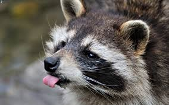
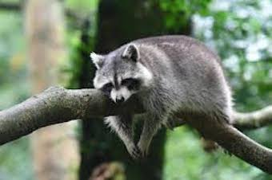
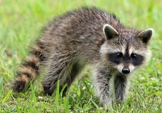
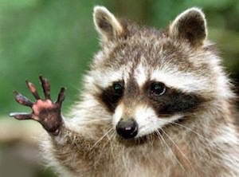
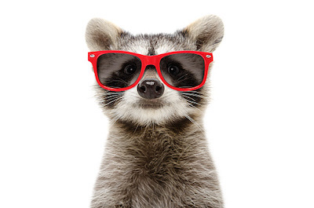
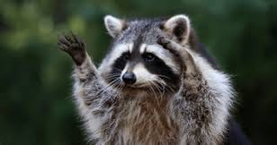

Il procione, noto anche come orsetto lavatore, è un mammifero di taglia media facente parte della famiglia dei Procionidi proveniente dal nord america.
Protagonisti di moltissimi video divertenti sui social, queste adorabili palle di pelo conquistano tutti con la loro furbizia e destrezza,
li abbiamo visti andare in bici, rubare cibo, intrufolarsi nelle case e nei bidoni dell'immondizia in cerca di cibo, compiere mille peripezie diverse ma sopratutto "lavare" il cibo primo di mangiarlo. Ma vi siete mai chiesti quale sia la loro storia?

Già da qui capiamo quanto sono furbi
La scoperta, la fisionomia e lo stile di vita
Chi li ha scoperti?
Durante i suoi viaggi, Cristoforo Colombo e la sua squadra furono i primi ad avvistare questa nuova specie,e proprio i tassonomi (coloro che si occupano di descrivere e catalogare le nuove specie)
scrissero il primo registro descrivendo il nostro piccolo amico, pensavano che fosse imparentato con diverse specie: cani, gatti e anche gli orsi!

"Sono decisamente un orso" cit.
La fisionomia
L'orsetto lavatore è il più grande della famiglia dei procionidi arrivando a misurare fino a 71 cm a cui dobbiamo andare ad aggiungere la coda che varia dai 20 ai 40 cm,
anche se in genere non supera i 25 cm. La caratteristica che salta agli occhi e ci ruba (non solo) il cuore
è la mascherina sul muso, segno di riconoscimento che lo ha reso cosi famoso e lo rende per ironia visto anche il suo
carattere, in tutto e per tutto simile a un bandito. Come potete notare dall'immagine,le sue zampe corte non gli consentono
di correre molto velocemente (velocita massima 24km/h), ma riesce a nuotare e può stare molte ore a mollo
Attenzione però! è un animale molto goloso e mangione, non è raro trovare esemplari molto tondeggianti,specialmente se domestico!.


i procioni hanno le mani?:
ciò che ha reso famosi i nostri amici pelosi, oltre inconfondibile aspetto, è senza dubbio la loro incredibile manualità.
Il tatto è il loro senso più sviluppato e quasi due terzi dell'area dedita alla percezione nella corteccia cerebrale è adibita all'impulso tattile. Può anche identificare un oggetto ancora prima di toccarlo
grazie alle vibrisse sopra le unghie. L'unica cosa che manca alle sue "mani" è il pollice opponibile, cosa che non gli impedisce di rubacchiare.
Come si comporta?
Questo ragazzaccio è un animale tipicamente notturno, gira spesso nei centri abitati in cerca di cibo, e abile ad arrampicarsi e vive prevalentemente nelle foreste.

Alcuni studi fatti negli anni novanta ci mostrano che il comportamento sociale varia in base al sesso :
le femmine dividono una area in comune e li si incontrano per mangiare e riposarsi, mentre i maschi formano dei gruppetti per mantenere il controllo e proteggersi da potenziali invasori ma anche rivali in amore.
E il famoso "Lavaggio del cibo"?
Il gesto che ha reso famoso questo animaletto, valendogli appunto il soprannome di "orsetto lavatore", è una azione che viene svolta solo in cattività. Il procione tasta il cibo con le zampe per esaminarlo o rimuoverne delle parti, immergerlo nell'acqua significa semplificarne il controllo grazie all'ammorbidimento dello strato corneo sulle zampe grazie all'acqua.
Ecco svelato il mistero: Non lavano il cibo per igiene (zozzoni!) ma lo fanno per poterlo controllare meglio!.
Amici e ora di salutarci!
Spero che queste piccole curiosità su questo altrettanto piccolo animale vi abbiano strappato, oltre a un pò di interesse,un piccolo sorriso!

E ricordatevi di lasciare i cestini dell'immondizia pieni di cibo!!
Ricordatevi di trattare con cura e gentilezza ogni animale che incontrate, la gentilezza costa poco e ripaga tanto.